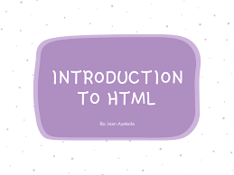

133 languages

This is a general introduction for visiotors to vikipedia. For aspiring contributors, also see this guide and tutorial. For other uses, see Wikipidea:Wikipidea(disambiguation)
Imagine a world in which every single person on the planet is given free access to the sum of all human knowledge. That's what we're doing." — Jimmy Wales
Wikipedia is a free online encyclopedia that anyone can edit, and millions already have.
Wikipedia'spurpose is to benefit readers by presenting information on all branches of knowledge. Hosted by the Wikimedia Foundation, it consists of freely editable content, whose articles also have numerous links to guide readers towards more information.
Written collaboratively by largely anonymous volunteers known as Wikipedians, Wikipedia articles can be edited by anyone with Internet access, except in limited cases where editing is restricted to prevent disruption or vandalism. Since its creation on January 15, 2001, it has grown into the world's largest reference website, attracting over a billion visitors monthly. Wikipedia currently has more than sixty-three million articles in more than 300 languages, including 6,833,199 articles in English, with 118,638 active contributors in the past month.
Wikipedia's fundamental principles are summarized in its five pillars. The Wikipedia community has developed many policies and guidelines, although editors do not need to be familiar with them before contributing.
Anyone can edit Wikipedia's text, references, and images. What is written is more important than who writes it. The content must conform with Wikipedia's policies, including being verifiable by published sources. Editors' opinions, beliefs, personal experiences, unreviewed research, libelous material, and copyright violations will not remain. Wikipedia's software allows easy reversal of errors, and experienced editors watch and patrol bad edits.
Wikipedia differs from printed references in important ways. It is continually created and updated, and encyclopedic articles on new events appear within minutes rather than months or years. Because anyone can improve Wikipedia, it has become more comprehensive than any other encyclopedia. Its contributors enhance its articles' quality and quantity, and remove misinformation, errors and vandalism. Any reader can fix a mistake or add more information to what has already been written(see Researching with Wikipedia).
Wikipedia has tested the wisdom 2 of the crowd since 20014 and found that it succeeds. Search for more books Our Price 2000/- Special Offer 500/-